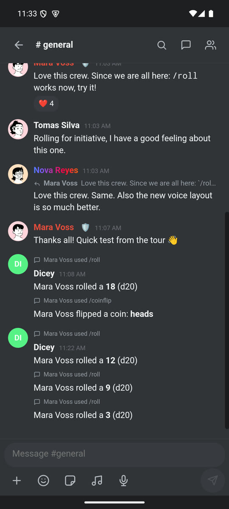

Web, desktop and phone clients
What each client offers, how the desktop app pins certificates, and how the phone interface is served.
All clients talk to the same server and show the same data. Pick whichever suits the moment.
| Client | Best for | Notes |
|---|---|---|
| Web | Everything, nothing to install | Every feature, in any modern browser |
| Desktop (Windows) | Daily use at a desk | Tray badge, native notifications, certificate pinning |
| Desktop, light (Windows) | A smaller download | Single exe on WebView2, same features |
| Android | On the go | Phone interface, local notifications, optional UnifiedPush |
Web
Open the server address. Sign in and you have every feature. Add it to your home screen from the browser menu if you like. Phone browsers are served the phone interface automatically; add ?ui=desktop or ?ui=mobile to the address to switch.
Desktop app (Windows)
A portable app: unzip it and run MeshCrowd.exe. On the first launch it asks for a server address such as https://192.168.1.10:8443, then loads the same interface as the browser and adds:
- A tray icon with a live unread badge colored by your presence. Colors are customizable under Settings, Desktop App, Tray Icon.
- A connecting screen with a spinner while the server answers. If it cannot be reached (or takes over 20 seconds) it offers Retry and Change server instead of a blank window.
- Native notifications, close to tray and start with Windows.
- F11 fullscreen, which can be switched off under Settings, Desktop App.
- Tray notification list: right-click the tray icon to see your latest notifications (Settings, Desktop App sets how many, 0 to 15, default 5). Clicking one removes it from the list and opens that exact message. A channel you left open still notifies you while the app is hidden in the tray or minimized; a second switch does the same when the window is merely unfocused.
- Download indicator: every attachment download shows a progress bar (size, percent, Cancel) in the bottom-right corner and on the taskbar icon; when it finishes, Open and Show in folder are one click away.
- Download location: under Settings, Downloads choose between being asked where to save each file and always saving to one folder. Pick the folder with Browse or type a full path; empty means the system Downloads folder. Existing files are never overwritten, a number is added instead.
- Window memory: size, position and a maximized state are restored on the next start.
- Remembered servers: the connect screen lists the servers you have used (name and icon from the server) with one-click connect and remove. It can also show the public server list from MeshSwarm trackers, which is off by default because asking a tracker shows it your IP address; the tracker list is editable. Clicking a server on a login page's public list switches the app to it after a native confirmation.
- Staying signed in: a login is kept until you log off, also across restarts; there is no "stay signed in" question.
- Clear cache: Settings, Desktop App, Clear cache deletes the HTTP cache, IndexedDB, CacheStorage, service workers, file system and WebSQL data to free disk space. Cookies and local storage are kept, so you stay logged in and keep your settings (a custom notification sound lives in IndexedDB and has to be set again). The app shows how many MB were freed.
- Tray number color and pulse: under Settings, Desktop App, Tray Icon pick the color of the digits in the tray icon and whether it pulses. When the connection to the server is lost, the tray and taskbar icons show a red forbidden sign until it returns.
- The operating system's screen and window picker for screen sharing.
- Invite links:
mcr://links from an invite page open in the app. The app registers itself for them on every start, which also repairs the entry after you move the folder; switch it off under Settings, Desktop App. Links always ask before switching server and before joining.register-mcr-protocol.batandunregister-mcr-protocol.batnext toMeshCrowd.exedo the same by hand. - Trust-on-first-use certificate pinning for self-signed servers: the first time you confirm the fingerprint, and a later change raises a warning. A certificate from a public authority is accepted normally.
The app stores its settings in a data folder next to the executable, so the whole folder can live on a USB stick. It carries no server and no web files of its own: updating the server updates the interface.
To run it from source for development: npm install then npm run electron.
C# desktop client (Windows)
An alternative to the Electron app: a single MeshCrowd.exe built on the system's WebView2 browser engine instead of a bundled Chromium, so it is much smaller. It loads the same interface and reads the same dismesh-client-config.json, and offers the tray with unread blink and recent list, native notifications, downloads with taskbar progress, mcr:// invite links, a single running instance, certificate pinning, close to tray, remembered servers with the optional public list and Clear cache. Settings live in a data folder next to the exe. Electron stays the main desktop client; use this one if you prefer a lighter app.
Machines that already have the WebView2 runtime (any current Windows 10 or 11) use it. A build that embeds the runtime is about 250 MB and unpacks it once into data/webview2-runtime on machines without it.
Phone interface
The server serves a phone-first interface at /m/, used by Android browsers and by the Android app. It has four tabs (Servers, Messages, Notifications, You), long-press menus, bottom sheets, voice messages, polls, scheduling by holding the send button, slash command chips and calls. See the Android app guide for installation and notifications.

Language and themes
Language and theme are saved per account, so they follow you from client to client.